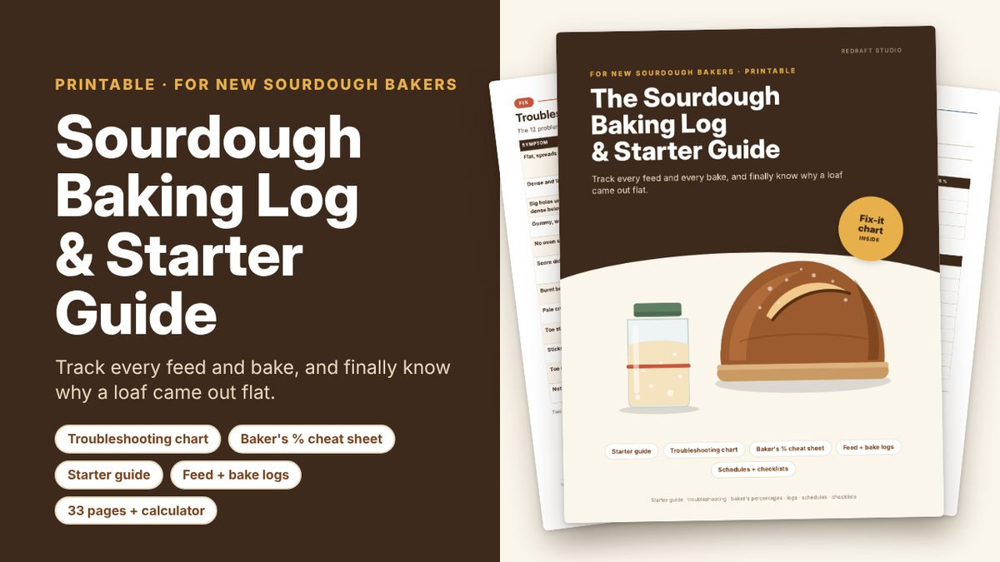
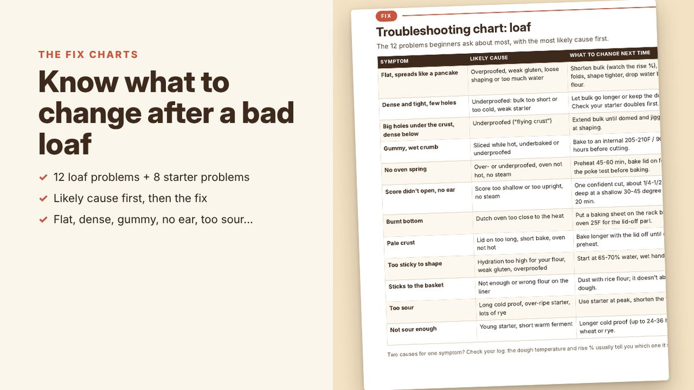
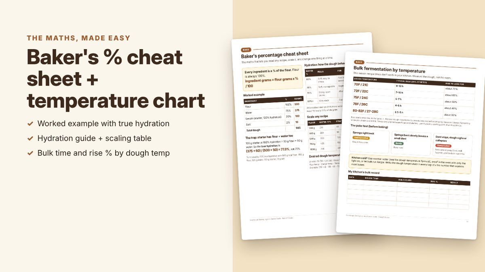
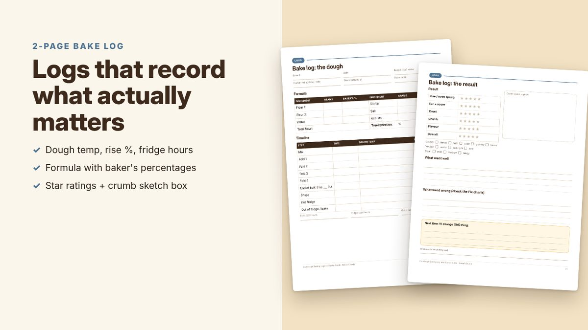
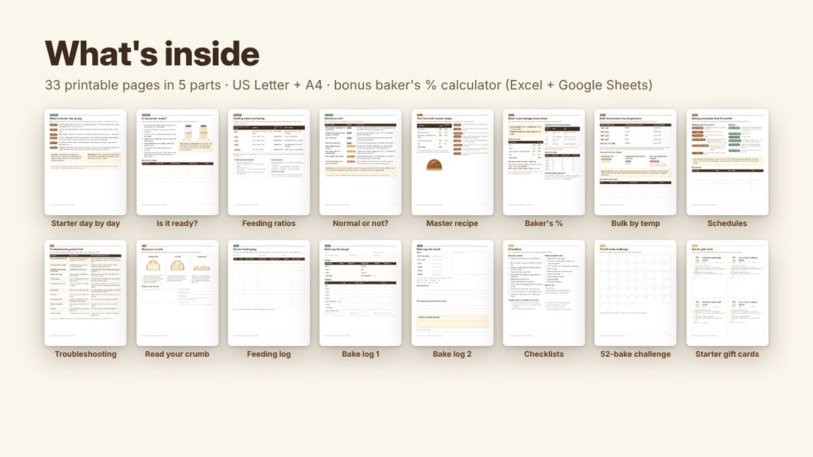
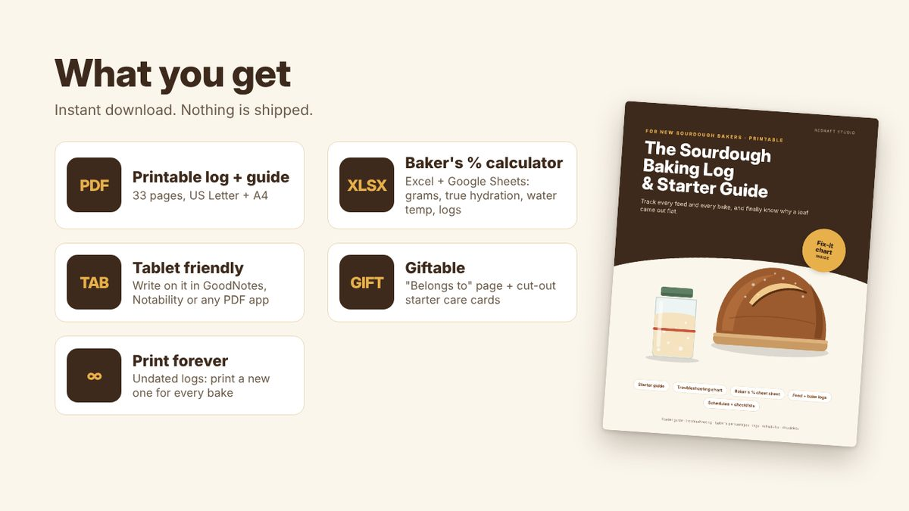

Sourdough Baking Log & Starter Guide
A printable sourdough journal with a troubleshooting chart and baker's percentage cheat sheet.
Instant download. Pay once, print as often as you like.

Track every feed and every bake, and finally know why a loaf came out flat.
Most sourdough journals are pretty pages with a box for the date and a box for "notes". You fill them in, the loaf comes out flat anyway, and the log can't tell you why. This one is built for new bakers: a starter guide, a troubleshooting chart and a baker's percentage cheat sheet, plus logs that record the numbers that actually change your bread.
What makes it different
- A troubleshooting chart that tells you what to change. 12 loaf problems (flat, dense, gummy, no ear, burnt bottom, too sour...) and 8 starter problems, each with the likely cause and the one thing to change next time.
- Read your crumb. Underproofed, just right and overproofed side by side, so you can diagnose your last loaf in a minute.
- Baker's percentages, finally explained. A worked example, the "starter has flour and water too" trap that makes your hydration wrong, a hydration guide and a scaling table.
- Bulk fermentation by temperature. Why recipe times don't work in your kitchen, the rise % to look for at each dough temperature, and the poke test.
- A starter guide for the week everyone gives up. Day by day from flour and water, including the normal day 4-6 slump, an "is my starter ready?" checklist, feeding ratios with times to peak, and a normal-or-not chart for hooch, smells and mould.
- Logs with the fields that matter. Room and dough temperature, rise %, fridge hours, feed ratio and time to peak, a crumb sketch box, star ratings and a "next time I'll change ONE thing" line.
- Schedules that fit a 9-5. A weekday and a weekend plan built around an overnight cold proof.
What's inside (33 pages, US Letter + A4)
- Starter: make a starter day by day · is my starter ready? · feeding ratios and timing · fridge routine · normal or not?
- Bake: beginner master recipe · the 8 stages · baker's % cheat sheet · bulk fermentation by temperature · poke test · weekday + weekend schedules
- Fix: starter troubleshooting chart · loaf troubleshooting chart · read your crumb
- Logs: starter feeding log · starter rise tracker · 2-page bake log · quick bake log · recipe cards
- Keep: bake-day checklist · equipment checklist · glossary · 52-bake challenge · best bakes · printable starter gift cards
- Bonus: baker's % calculator spreadsheet (Excel + Google Sheets) with true hydration, a water temperature helper, a bake log and a starter log
A lovely gift for a new baker
There's a "this baking log belongs to" page with room for a note from you, and cut-out starter care cards to tie to a jar of starter.
Good to know
- Instant digital download. Nothing is shipped.
- Print at home or at a print shop, or write on it in GoodNotes, Notability or any PDF app.
- Undated, so you can print the logs again and again.
- Times and temperatures are typical starting points. Your flour, starter and kitchen will differ, so the guide teaches you to read the dough.
- For personal use. Please don't share or resell the files.





Not sure yet? Start with the free kit.
Free Sourdough Starter Rescue Kit: a few pages from the same system, free to download and print.
Download the free kit